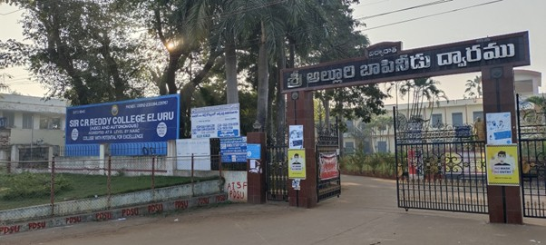
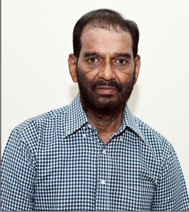
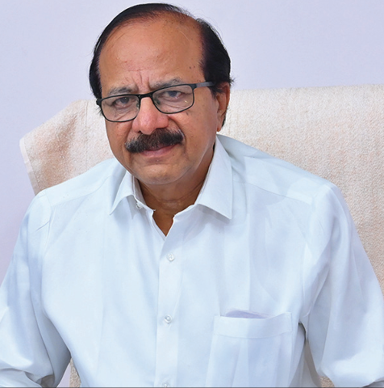

SIR C R REDDY COLLEGE (AUTONOMOUS), ELURU

College Vision
"Ensuring Quality in Education by providing distinct environment of academic excellence with Social commitment and inculcation of values in young and aspiring minds".
College Mission
1. To develop application-oriented courses, with necessary inputs and values with a view to shape the learners for all-round development.
2. To cultivate knowledge skills, values, and Confidence in the students to grow, thrive and prosper.
3. To promote academic exchange and strengthen academic industry interfacing exploring the technology available.
4. To instigate the spirit of enquiry, integrity, leadership and deep sense of social justice among students.
5. To provide life skills for a successful career and combat the competition in the society.

Dr. K. Sri Vishnu Mohan
Correspondent

Dr. K.A. Rama Raju
Principal
Accreditation & Quality Certifications
• NAAC ‘A’ Grade in 2005, 2011, 2017, and 2022.
• UGC recognized as College with Potential for Excellence (CPE) in 2010.
• ISO 9001:2015 certified institution.
Infrastructure & Facilities
The college has modern academic blocks, central library, auditorium, gymnasium, bank & canteen, dining hall, distance education block, and separate hostels for boys and girls with campus security.
Brief History
Conclusion
Sir C R Reddy College continues its legacy of academic excellence, supported by strong accreditation, autonomy, and modern infrastructure. The institution remains committed to holistic education and preparing students for global challenges and societal development.